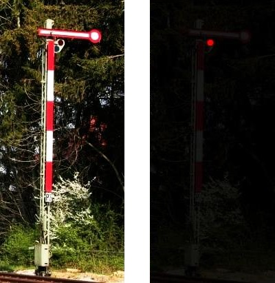
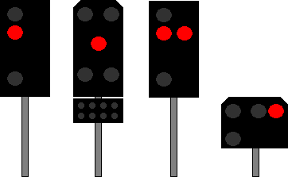

Signalbuch-Online / Hp-Signale
Signal Hp 0
Hauptsignal oder Sperrsignal zeigt Halt.
(1)
Bedeutung
Halt.
(2)
Beschreibung Formsignal
Tageszeichen:
Ein Signalflügel – bei zweiflügligen Signalen der obere Flügel – zeigt waagerecht nach rechts.
Nachtzeichen:
Ein rotes Licht.

(3)
Beschreibung Lichtsignal
Ein rotes Licht oder zwei rote Lichter nebeneinander.

(4)
Anwendung
Das Signal Hp 0 wird gezeigt am Hauptsignal oder am Sperrsignal.
(5)
Hp 0 in Verbindung mit Sh 1 bzw. Ra 12 (DV 301)
Wird am Signal Hp 0 das Signal Sh 1 bzw. das Signal Ra 12 (DV 301) gezeigt, so ist das Haltegebot für Rangierfahrten aufgehoben.
Am Hauptsignal mit zwei roten Lichtern verlischt beim Aufleuchten des Signals Sh 1 (DS 301) ein rotes Licht.
(6)
Originalbilder
Zum Öffnen der Galerie bitte Bild anklicken!